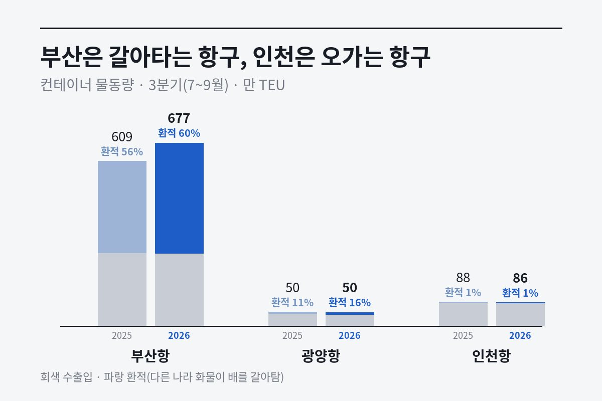
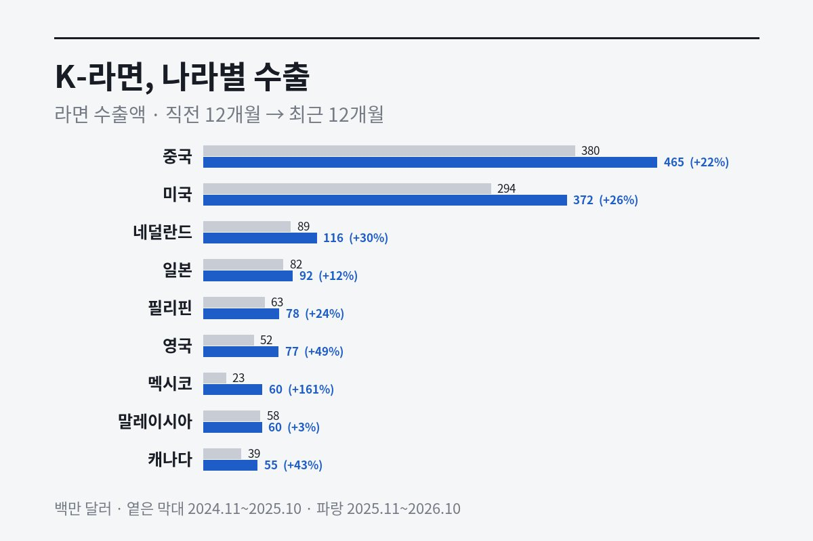
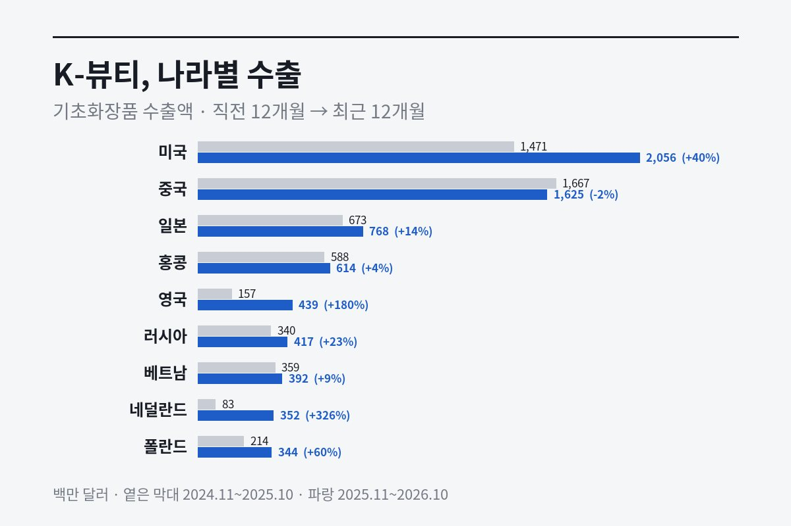
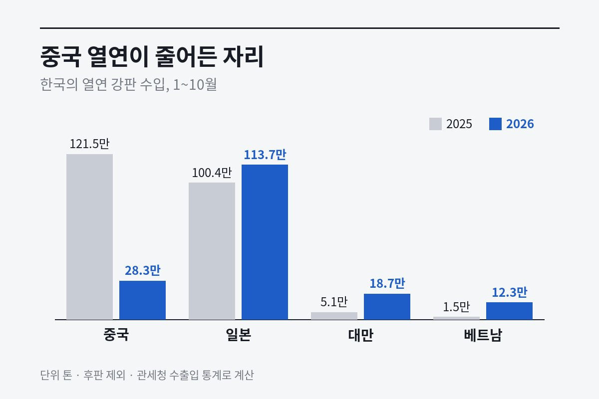
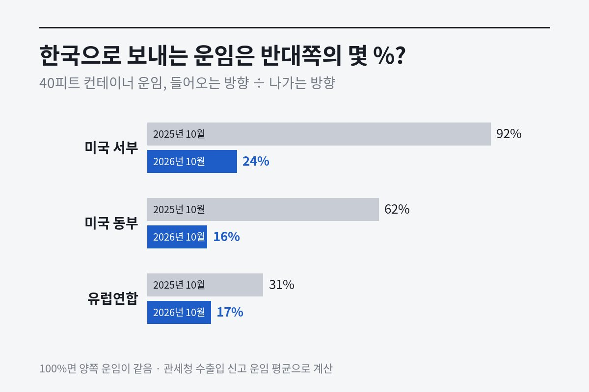

한국과 중국의 무역
최근 12개월(2025년 11월~2026년 10월) 한국은 중국에 2,235억 달러어치를 팔고 1,809억 달러어치를 샀어요.
한국 전체 수출의 21.1%가 중국으로 갔어요.
중국은 컨테이너 흐름이 거꾸로예요.
2025년 10월~2026년 9월 한국에서 중국으로 나간 컨테이너의 47.7%가 빈 상자였고, 중국에서 들어온 것 중 빈 것은 3%였어요(해양수산부).
2026년 10월 관세청 신고 운임으로 중국→한국 운임은 한국→중국의 3.7배였어요.
2026년 3분기 부산항 환적 가운데 중국 관련 물량이 25.9% 늘었어요(해양수산부).
해수부는 태풍으로 중국 항만이 붐비자 대신 부산항에 들른 배가 늘어난 것을 원인 가운데 하나로 들었어요.
한국이 판 것 (수출)
2,235억 달러
+73.5% · 전체 수출의 21.1%
한국이 산 것 (수입)
1,809억 달러
+29.1%
판 것 − 산 것 (무역수지)
426억 달러
최근 12개월
다음 잠정치 발표
- 11월 23일11월 1~20일
- 12월 1일11월 한 달
- 12월 11일12월 1~10일
중국로 간 한국 수출 최근 25개월
그 달1년 전 같은 달
표로 보기
| 달 | 그 달 | 1년 전 |
|---|---|---|
| 2024년 10월 | 122억 달러 | 110억 달러 |
| 2024년 11월 | 113억 달러 | 113억 달러 |
| 2024년 12월 | 118억 달러 | 109억 달러 |
| 2025년 1월 | 92.0억 달러 | 107억 달러 |
| 2025년 2월 | 95.1억 달러 | 96.4억 달러 |
| 2025년 3월 | 101억 달러 | 105억 달러 |
| 2025년 4월 | 109억 달러 | 105억 달러 |
| 2025년 5월 | 104억 달러 | 114억 달러 |
| 2025년 6월 | 104억 달러 | 107억 달러 |
| 2025년 7월 | 110억 달러 | 114억 달러 |
| 2025년 8월 | 110억 달러 | 113억 달러 |
| 2025년 9월 | 117억 달러 | 116억 달러 |
| 2025년 10월 | 116억 달러 | 122억 달러 |
| 2025년 11월 | 120억 달러 | 113억 달러 |
| 2025년 12월 | 130억 달러 | 118억 달러 |
| 2026년 1월 | 135억 달러 | 92.0억 달러 |
| 2026년 2월 | 128억 달러 | 95.1억 달러 |
| 2026년 3월 | 167억 달러 | 101억 달러 |
| 2026년 4월 | 177억 달러 | 109억 달러 |
| 2026년 5월 | 189억 달러 | 104억 달러 |
| 2026년 6월 | 200억 달러 | 104억 달러 |
| 2026년 7월 | 217억 달러 | 110억 달러 |
| 2026년 8월 | 241억 달러 | 110억 달러 |
| 2026년 9월 | 261억 달러 | 117억 달러 |
| 2026년 10월 | 270억 달러 | 116억 달러 |
중국에서 들여온 한국 수입
그 달1년 전 같은 달
표로 보기
| 달 | 그 달 | 1년 전 |
|---|---|---|
| 2024년 10월 | 125억 달러 | 125억 달러 |
| 2024년 11월 | 114억 달러 | 121억 달러 |
| 2024년 12월 | 124억 달러 | 109억 달러 |
| 2025년 1월 | 112억 달러 | 124억 달러 |
| 2025년 2월 | 94.9억 달러 | 94.3억 달러 |
| 2025년 3월 | 114억 달러 | 114억 달러 |
| 2025년 4월 | 125억 달러 | 124억 달러 |
| 2025년 5월 | 113억 달러 | 123억 달러 |
| 2025년 6월 | 115억 달러 | 109억 달러 |
| 2025년 7월 | 124억 달러 | 119억 달러 |
| 2025년 8월 | 116억 달러 | 115억 달러 |
| 2025년 9월 | 135억 달러 | 112억 달러 |
| 2025년 10월 | 114억 달러 | 125억 달러 |
| 2025년 11월 | 120억 달러 | 114억 달러 |
| 2025년 12월 | 137억 달러 | 124억 달러 |
| 2026년 1월 | 132억 달러 | 112억 달러 |
| 2026년 2월 | 116억 달러 | 94.9억 달러 |
| 2026년 3월 | 141억 달러 | 114억 달러 |
| 2026년 4월 | 156억 달러 | 125억 달러 |
| 2026년 5월 | 151억 달러 | 113억 달러 |
| 2026년 6월 | 164억 달러 | 115억 달러 |
| 2026년 7월 | 163억 달러 | 124억 달러 |
| 2026년 8월 | 153억 달러 | 116억 달러 |
| 2026년 9월 | 193억 달러 | 135억 달러 |
| 2026년 10월 | 182억 달러 | 114억 달러 |
주요 수출 품목 최근 12개월, 이 사이트가 추적하는 품목 중
| 품목 | 한국이 판 것 (수출) | 이 나라 수출 중 |
|---|---|---|
| 반도체(집적회로) | 1,272억 달러 | 56.9% |
| 석유제품 | 26.7억 달러 | 1.2% |
| 철강 | 17.8억 달러 | 0.8% |
| 화장품 | 16.9억 달러 | 0.8% |
| 자동차 부품 | 8.1억 달러 | 0.4% |
| 배터리(축전지) | 4.9억 달러 | 0.2% |
| 라면 | 4.6억 달러 | 0.2% |
| 휴대전화· | 4.5억 달러 | 0.2% |
| 바이오 의약품(백신· | 1.4억 달러 | 0.1% |
| 선박 | 1.4억 달러 | 0.1% |
한국이 중국에 많이 판 것 2025년 11월~2026년 10월
| 품목 | 최근 12개월 | 1년 전보다 | 전체 중 몫 |
|---|---|---|---|
| 디램 반도체 | 1,144억 달러 | +315.5% | 41% |
| 모노리식 집적회로 | 126억 달러 | -3.4% | 23% |
| 방송· | 79.0억 달러 | +15.2% | 69% |
| 디램 모듈 | 51.6억 달러 | +155.7% | 5% |
| 파라-크실렌 | 40.6억 달러 | +18.4% | 88% |
| 기록이 안 된 매체 | 35.1억 달러 | +186.8% | 8% |
| 니켈코발트망간 산화물의 리튬염 | 26.6억 달러 | +45.0% | 47% |
| 반도체 제조 장비 | 26.6억 달러 | -1.2% | 31% |
| 벤젠 고리모양 탄화수소 | 20.2억 달러 | -10.4% | 90% |
| 전자공업에 사용하기 위하여 도프처리된 화학원소 | 19.3억 달러 | +6.6% | 73% |
한국이 중국에서 많이 산 것 2025년 11월~2026년 10월
| 품목 | 최근 12개월 | 1년 전보다 | 전체 중 몫 |
|---|---|---|---|
| 디램 반도체 | 334억 달러 | +118.6% | 81% |
| 전기차용 축전지(배터리) | 47.9억 달러 | +21.4% | 81% |
| 디램 모듈 | 45.6억 달러 | +111.6% | 36% |
| 신차 승용차 | 45.3억 달러 | +91.2% | 32% |
| 모노리식 집적회로 | 44.3억 달러 | +27.4% | 9% |
| 스마트폰 | 42.0억 달러 | +46.7% | 57% |
| 합성섬유로 만든 것 | 21.8억 달러 | +13.2% | 52% |
| 니켈코발트망간 산화물의 리튬염 | 20.9억 달러 | +65.3% | 95% |
| 휴대용 자동자료처리기계 | 19.6억 달러 | -6.4% | 65% |
| 컴퓨터 | 19.5억 달러 | +68.4% | 28% |
컨테이너 왕래 2025년 11월~2026년 10월
한국 → 중국
4,943.4천 TEU
빈 컨테이너 48%
중국 → 한국
6,617.3천 TEU
빈 컨테이너 3%
짐을 채운 컨테이너를 기준으로, 한국이 중국에 100개를 보낼 때 248개가 돌아왔어요.
자료: 해양수산부 국가별 컨테이너 수송 통계(TEU는 20피트 컨테이너 한 개).
뉴스

부산항 3분기 컨테이너 60%는 환적… 1년 새 20% 늘어2026.11.20
라면 수출 1년 새 24% 늘어… 일본행 김은 kg당 값 23% 내려2026.11.19
K-뷰티 기초화장품 수출, 미국이 40% 늘며 중국 앞질러2026.11.18한한령 풀린다? 중국 약속은 '차별 금지'2026.11.18
중국산 열연 수입 77% 줄자 일본산이 65% 차지2026.11.17
미국발 한국행 컨테이너 운임, 한국발의 24%로 떨어져2026.11.16자료: 관세청 수출입 통계(공공데이터포털 API). 금액은 미국 달러, 수출은 신고 금액(FOB), 수입은 과세 가격(CIF) 기준이에요.
이번 달 숫자는 잠정치라 나중에 조금 바뀔 수 있어요. 자료 갱신 2026-11-22 11:40 KST.